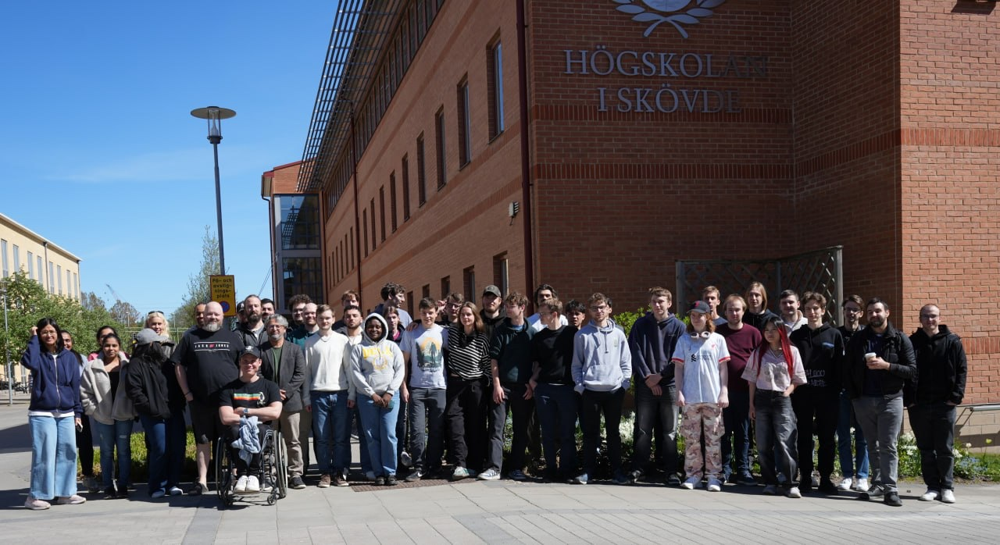

After everything was said and done, our project week had come to an end. Looking back, every single one of us had an amazing experience throughout the whole week. Whether it was solving challenges, eating good food, drinking an overpriced pint (8 euros, by the way!), or simply chatting with our newly made friends, it was unforgettable.
What stood out most was how welcome everyone felt from start to finish. Across the whole group, we made many new friends and created memories that will stay with us long after this trip.
We actually learned a lot of new things from the Swedish students, just as they learned a lot from us. To sum up this project week: we don't just think it was a successful and productive week, we know it was.
